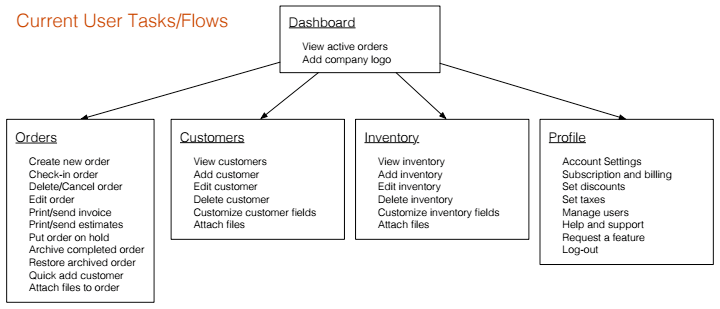
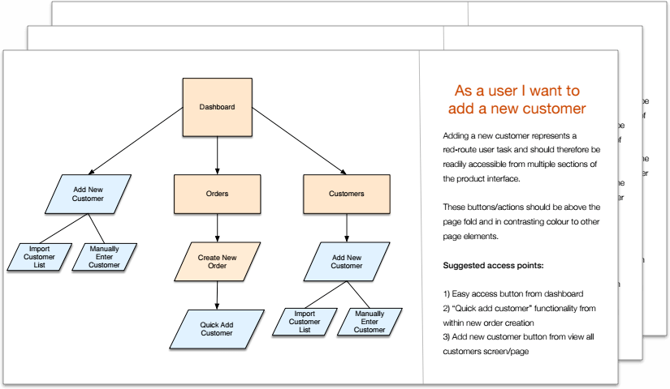
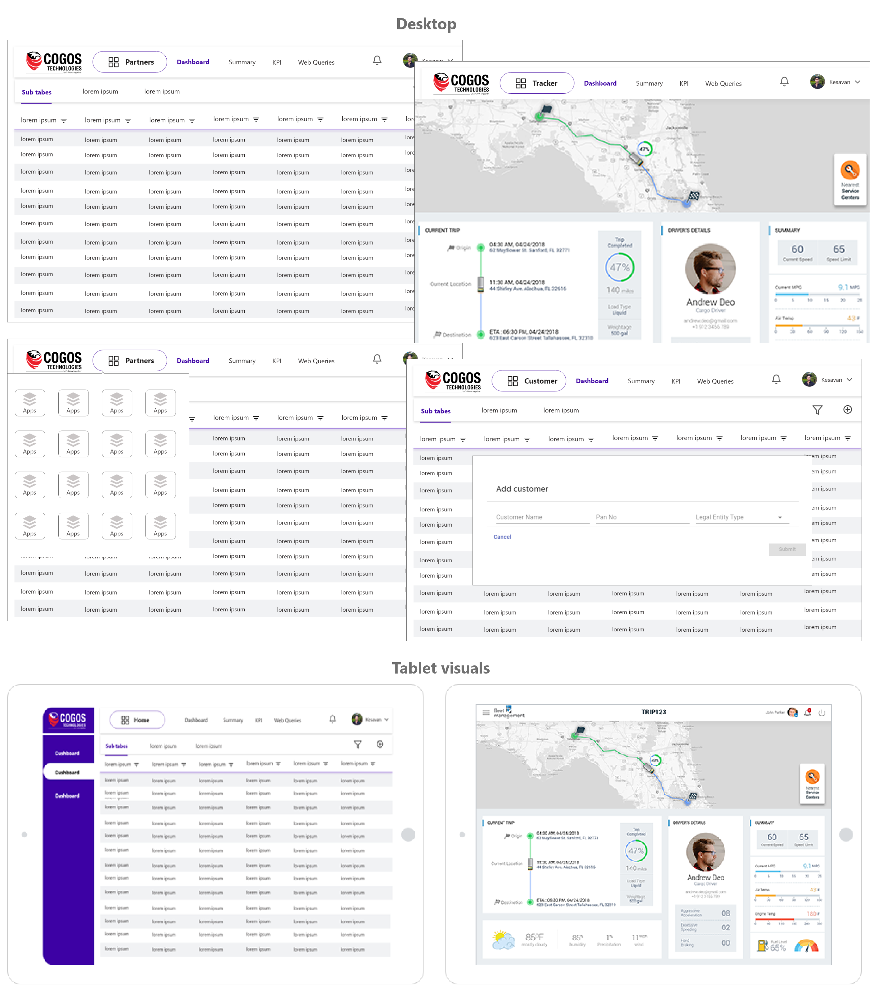

Cogos is an online fleet management platform designed to offer one stop destination for all the intra-city link supply chains. Cogos offers a platform that links business and fleet. The enterprise caters the needs of B2B Business and enables smooth processing of transportation of goods with it’s integrated advanced sensors, IOT technologies, and third part applications integrated with the platform.
In order to better understand this industry and find out where the product currently fit within the market I conducted a competitor analysis.
I focused on companies with a similar target market: small to mid-sized rental companies.
Along with the analysis, I included a detailed list of suggested product enhancements. This list included features that the top competitors had but my client was missing.
It was very important to have a clear picture of the product’s current content and structure. I conducted a full content inventory to assess what changes would be necessary to improve the information architecture and enhance the product’s functionality.
As the list of current and desired functionality grew, it became important to prioritize each item. To do this I completed a red route analysis. The red routes (items in the red squares) are the critical user tasks for the product and these together represent the minimum viable product (MVP).
During design and development red routes should always be prioritized, user-centric and remain obstacle-free
I created user flows for each red route task. This helped ensure that each flow was prioritized and obstacle-free. I made sure to include multiple access points, a clear start and finish and illustrated steps in sequential order.
Once I had a clear list of requirements for the new design I conducted a card sorting exercise. This was done to better understand how people expect the content to be organized.
In the card sorting session, participants were asked to organize tasks into pre-defined categories in a way that made the most sense to them. The categories given were the main navigation of the application and included an “other” category.
The results were displayed in a popular placement matrix. This demonstrated the percentage of participants that sorted a task into each category.
I created wireframes for desktop and tablet screens. Through the wireframes I was able to design user flows, navigation, and interactions. The wireframes were annotation for clarity and technical details.
If you like what you see and want to chat please contact me!
+91 000000000
Bengalore, India